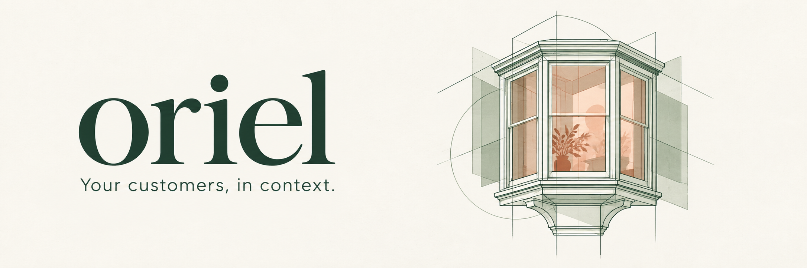
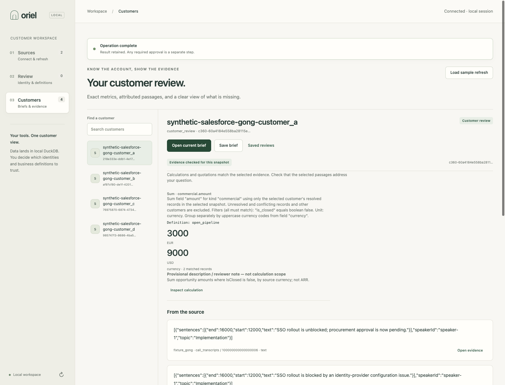
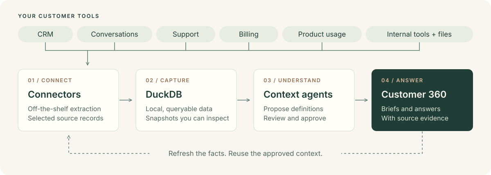

The open-source Customer 360 agent
Get the customer story from the tools you already use. Oriel brings customer data into DuckDB, helps you define what it means, and builds customer briefs and answers with evidence you can inspect.
Get started · Documentation · Connect your tools · Contribute
Built for customer success, account teams, and the technical teams supporting them. Bring CRM, conversations, support, billing, product usage, or internal data. Start with the sources you have.
Developer preview. Run locally for one operator. Try both sample workflows without vendor credentials or model calls. What works today →
Quickstart
You'll need Python 3.10–3.14, uv, and macOS or Linux.
git clone https://github.com/anirudhagarwal-atlan/oriel.git
cd oriel
uv sync --frozen --extra connectors
uv run --no-sync oriel --workspace .oriel-customer customer app --port 8787
Open http://127.0.0.1:8787, then:
- Connect a sample. Choose Billing + support or CRM + conversations.
- Review the context. Follow the identity and field-mapping reviews, then use the authored sample definitions. No model needed for this route.
- Open a customer brief. Inspect a calculation or source passage, save the review, and load the sample refresh to see what changed.
Follow the walkthrough for the exact review steps. To bootstrap definitions with a context agent and ask questions, use a separately installed, authenticated claude CLI on your PATH, enable model access, and set a spending limit. Selected data is sent to the model only with your consent.
Walk into the next customer conversation prepared

The working application with synthetic sample data. Reproduce this workflow.
- Put the account in context. Bring commercial records, billing, support, and conversations into a customer view, with explicit links between source records.
- Follow the answer to its evidence. Inspect the metric definition, the DuckDB calculation, and the attributed source passage. Missing information stays visible.
- See what changed. Save a brief, refresh the source data, and compare the next review using the same approved definitions.
Start with a concrete question: “What is outstanding on this account?” or “What does the latest support update say?” The available sources and reviewed definitions determine what Oriel can answer.
From your tools to an answer you can inspect

- Connect. Use off-the-shelf connectors to extract selected resources from your tools.
- Load into DuckDB. Keep queryable snapshots in your own local workspace.
- Bootstrap context. Review customer links and field mappings. A context agent proposes business definitions; you inspect and approve them.
- Ask and inspect. Compute answers against the captured data, follow the evidence, and reuse the context after refresh.
Definitions include the details that change an answer: what “open” means, which records belong to a customer, and whether an amount is in dollars or cents. The agent works from this reviewed context and the DuckDB snapshot.
Bring your customer stack
Oriel's connector catalog covers customer APIs, SQL databases, object stores, and files. Explore an adapter before configuring it:
uv run --no-sync oriel source list --available
uv run --no-sync oriel source describe salesforce
The customer workflow is independent of any one vendor. The included examples pair billing with support and CRM with conversations; neither pair is required. Add sources and map their fields to the customer information you need.
A catalog entry is not a verified live integration. Adapter requirements and resource coverage vary. Both included samples use real SQLite/dlt extraction on synthetic data; they do not connect to vendor accounts. See connector readiness and the own-data setup guide.
Build with us
Try a customer review and tell us where you got stuck. Useful contributions include source mappings, reviewed definitions, connector validation, and clearer onboarding.
Contributing · Roadmap · Architecture · CLI and MCP · FAQ
Oriel is MIT licensed. Bundled third-party components retain their licenses and notices. License · Attribution